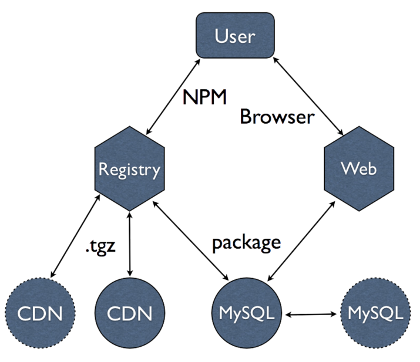
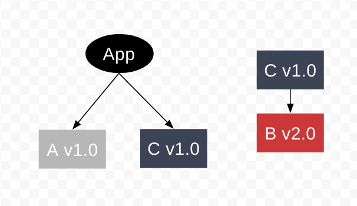

class: cover .cover-content[ <div style="margin: 8em;"> <svg viewBox="0 0 18 7"> <path fill="#CB3837" d="M0,0v6h5v1h4v-1h9v-6"></path> <path fill="#FFF" d="M1,1v4h2v-3h1v3h1v-4h1v5h2v-4h1v2h-1v1h2v-4h1v4h2v-3h1v3h1v-3h1v3h1v-4"></path> </svg> <div> # 入门 ] --- # 简介 .trigger-time.trigger-time--2em[ - NPM => NodeJS Package Manager - 类似 Maven、CocoaPods、Gem、PIP - <2010-09-11: 第一版 - 2015-06-25: v3.0.0 - 2016-08-11: v3.10.7 最新版 - 一些数据： - 324,287 total packages - 210,072,844 downloads in the last day ] -- ## 把世界送给你 --- # 作者 <br /> <div> </div> ## [@isaacs](http://izs.me/) -- ### [npm, Inc](https://www.npmjs.com/about) --- # Module ### [CommonJS 1.0 Specification](http://wiki.commonjs.org/wiki/Modules/1.0) .code-block[ ```javascript // math.js exports.add = function(a, b) { return a + b; }; ``` ] .code-block[ ```javascript // index.js var add = require('./math').add; console.log(add(1, 2)); // output => 3 ``` ] -- <br /> ### A module is anything that can be loaded with require() in a Node.js program. ### [NodeJS Module Resolution Algorithm](https://nodejs.org/api/modules.html#modules_all_together) --- # Package ### A package is a file or directory that is described by a package.json. .code-block[ ```bash /Users/spring/Repo/tiler/ ├── README.md # 说明文档 ├── index.js # 默认的入口文件 ├── lib # 代码库 ├── package.json # 模块信息 └── test # 测试 ``` ] --- # 架构 <div>  </div> --- # 常用命令 <br /> .trigger-time.trigger-time--5em[ - install - ls - update - uninstall - config - init - adduser / publish / unpublish ] --- # Install ### 安装 Packages .code-block[ ```bash # 安装指定的包 $ npm install <pkg> # 安装指定版本的包 $ npm install <pkg>@<version> # 安装 package.json 指定的包 $ npm install # 安装全局包 $ npm install --global <pkg> # 安装包的同时，将该包写入 package.json 的 dependencies $ npm install --save <pkg> # 安装包的同时，将该包写入 package.json 的 devDependencies $ npm install --save-dev <pkg> ``` ] --- # Demo --- <img src="mod-a-structure.png" /> --- <img src="app-a-structure.png" /> ---  --- <img src="app-a-c-structure.png" style="width: 36em;" /> --- # List ### 以树形结构打印依赖包及其版本 .code-block[ ```bash $ npm ls # output => install-example@1.0.0 /Playground/npm/install ├─┬ mod-a@1.0.0 │ └── mod-b@1.0.0 └─┬ mod-c@1.0.0 └── mod-b@2.0.0 ``` ] --- # Update <br /> ### 升级所有依赖包至版本规则允许的最新版本，并安装缺失的依赖包 .code-block[ ```bash # 更新指定的包 $ npm update <pkg> # 更新 package.json 中依赖的包 $ npm update ``` ] --- # Uninstall <br /> ### 与 Install 对应，删除 Packages .code-block[ ```bash # 删除指定的包 $ npm uninstall <pkg> # 删除指定的包，并更新 package.json 的 dependencies $ npm uninstall --save <pkg> ``` ] --- # Config ### 配置 NPM .code-block[ ```bash # 列出用户配置 $ npm config list # 列出所有配置 $ npm config ls -l # 列出指定的配置 $ npm config get registry # 设置默认的 user $ npm config set init-author-name 'spring' ``` ] --- # Init ### 交互式的创建 package.json .code-block[ ```bash $ npm init =====> name: (init) init-demo version: (1.0.0) description: init demo package entry point: (index.js) test command: git repository: keywords: init, demo license: (ISC) MIT ``` ] --- # Adduser / Publish / Unpublish ### 发布包相关 .code-block[ ```bash # 登录 NPM $ npm adduser # 发布模块 $ npm publish # [高危操作] 撤销已发布模块 $ npm unpublish ``` ] --- # 实用技巧 <br /> .trigger-time.trigger-time--5em[ - version - cache - scripts - 私有包 ] --- # Version ### [Semantic Versioning 2.0.0](http://semver.org/) ## MAJOR.MINOR.PATCH -- .trigger-time.trigger-time--0em[ - `version` <br />明确的版本 - `*` <br />任何版本 - `>version`、`>=version`、`<version`、`<=version` - `~version` <br />minor 确定，允许 patch 变化；否则允许 minor 变化 - `^version` <br />允许不修改最左非零位及其前缀的所有版本号的变化 ] --- # Version 的坑 ### 第三方包更新后，引入了新的 Bug 或兼容性问题，导致应用故障 -- <br /> ## 尊重规则，契约精神 ### [使用 npm shrinkwrap 来管理项目依赖](http://tech.meituan.com/npm-shrinkwrap.html) --- # Cache ### 缓存目录为 `npm config get cache` .code-block[ ```javascript if (缓存不存在 || 缓存超过免检时间) { fetch from registry; update cache; } install from cache; ``` ] --- # Scripts ### 生命周期脚本，可在 scripts 字段自定义 .trigger-time.trigger-time--5em[ - prestart、start、poststart 启动应用 - pretest、test、posttest 执行测试 - lint [自定义] 执行代码检查 ] .code-block[ ```bash # 内置声明周期脚本可以直接执行 $ npm run start $ npm start # 自定义脚本 $ npm run lint ``` ] --- # 私有包 ### `<pkg> => @scope@<pkg>` ### 只在公司内部范围内流通 .code-block[ ```bash npm install @ucar/tiler ``` ] --- # 参考 .trigger-time.trigger-time--5em[ - [Packages and Modules](https://docs.npmjs.com/how-npm-works/packages) - [npm 模块安装机制简介](http://www.ruanyifeng.com/blog/2016/01/npm-install.html) - [npm v3 Dependency Resolution](https://docs.npmjs.com/how-npm-works/npm3) - [npm 基本用法和实用技巧](https://github.com/theicebear/npm-basic-usage) - [npm 官方文档](https://docs.npmjs.com/) ] --- name: last-page # Thanks